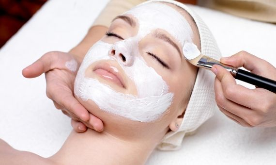

MASAJES
Corporal
Descontracturante y relajante
El masaje descontracturante y relajante alivia la tensión muscular y fomenta la relajación mediante técnicas de amasamiento y presión suave.
Tuina
Tuina es una forma tradicional de masaje chino que combina presiones y manipulaciones en puntos específicos para promover la salud y el bienestar.
Drenaje linfatico facial y corporal
El drenaje linfático es una técnica de masaje suave que estimula el sistema linfático, ayudando a eliminar toxinas y reducir la retención de líquidos.
Masaje Tailandes
El masaje tailandés es una técnica de masaje tradicional que combina presiones, estiramientos y manipulaciones para mejorar la flexibilidad y aliviar la tensión muscular. Se realiza en un colchón en el suelo y se basa en principios de la medicina tradicional tailandesa.
Masaje en silla Turca
El masaje en silla turca es una terapia de masaje realizada mientras el receptor está sentado en una silla especialmente diseñada. Se centra en aliviar la tensión en la espalda, cuello y hombros, ofreciendo comodidad y relajación en un corto período de tiempo.
Facial
Facial Kobido
El masaje facial Kobido es una técnica japonesa que tonifica la piel y los músculos faciales mediante movimientos suaves, mejorando la circulación y promoviendo un aspecto rejuvenecido.
Facial Rejuvenecedor
El masaje facial rejuvenecedor es una técnica de masaje que se centra en el rostro y el cuello para mejorar la circulación, reducir signos de envejecimiento y promover la relajación, utilizando movimientos suaves y presiones para revitalizar la piel y los músculos faciales.
